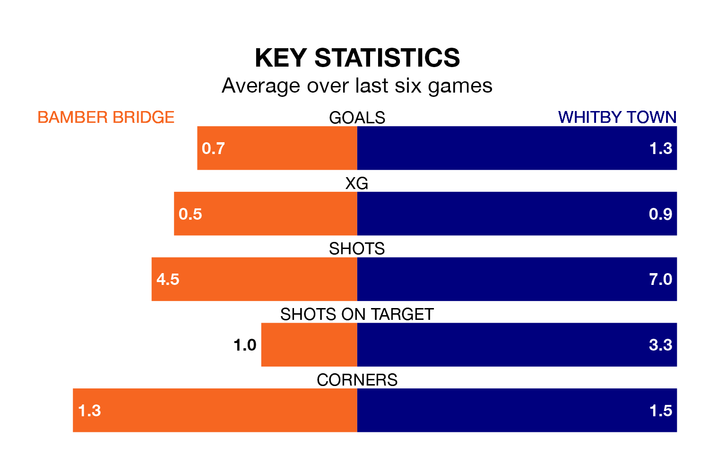

Bamber Bridge welcome Whitby Town to the Sir Tom Finney Stadium on Saturday looking to pick up points to end their six-game losing streak.
Bamber Bridge's struggles have left them with no points from their last six Northern Premier League matches, while their opponents have earned four from a possible 18.
In the last 10 years, Bamber Bridge and Whitby have played each other on eight occasions. Bamber Bridge won three of them and Whitby five.
On average, Bamber Bridge scored 1.0 goal and Whitby 1.6 in those matches.
Their last meeting was on November 18, when Whitby won 2-0 at home.
Bamber Bridge are 17th in the table after 36 games, of which they have won nine and drawn 11, earning 38 points.
Whitby are seven places ahead of the hosts in 10th, with 16 wins and eight draws putting them on 56 points.
With 55 goals in 36 games so far this season, Bamber Bridge are scoring at below the league average rate with 1.5 goals per game. And they are conceding more than average, letting in 73 goals at a rate of 2.0 per game.
Town are also below average scorers, with 1.5 goals per game, compared to a league average of 1.6. They have conceded 1.2 goals per game.
Bamber Bridge's last match was on April 13, a 3-0 loss against United of Manchester.
Whitby lost 2-1 against Radcliffe Borough last time out, also on April 13.
Updated: 15:40 (UTC), 18/04/24